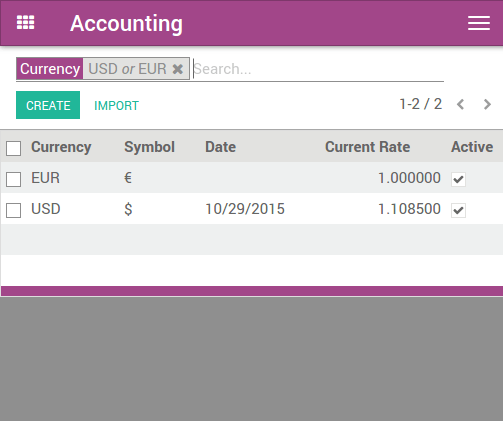
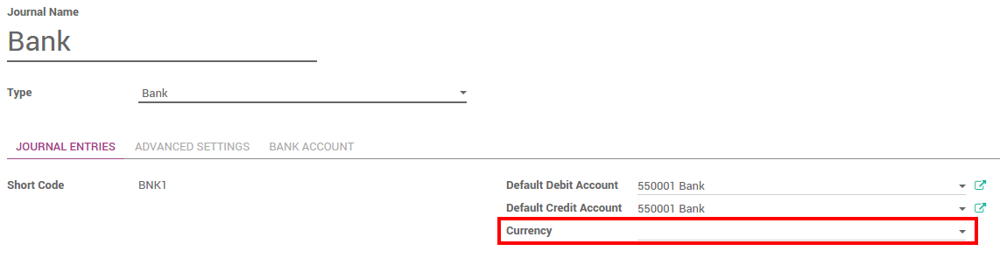
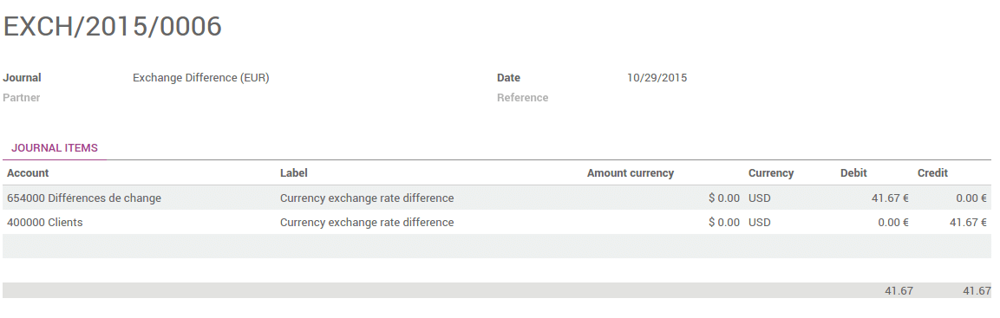

Overview
Any company doing international trade faces the case where the payments are in a different currency.
After receiving their payments, you have the option to convert the amount into your company currency. Multi currency payment implies rates fluctuations. The rate differences are automatically recorded by Odoo.
Configuration
Enable multi-currencies
In the accounting module, Go to and flag Allow multi currencies, then click on apply.

Configure the currency rates in . Write down the rate and make sure the currency is active.

In this document, the base currency is Euro and we will record payments in Dollars.
Tip
You can automatically fetch the currency rates from the European Central Bank or from Yahoo. Please read the document : How is Odoo's multi-currency working?.
Configure your journal
In order to register payments in other currencies, you have to remove the currency constraint on the journal. Go to the accounting application, Click on More on the journal and Settings.

Check if the Currency field is empty or in the foreign currency in which you will register the payments. If a currency is filled in, it means that you can register payments only in this currency.
Record a payment in a different currency
In the Accounting application, go to . Register the payment and indicate that it was done in the foreign currency. Then click on confirm.

The journal entry has been posted but not allocated.
Go back to your invoice () and click on Add to allocate the payment.

Record a bank statement in a different currency
Create or import the bank statement of your payment. The Amount is in the company currency. There are two complementary fields, the Amount currency, which is the amount that was actually paid and the Currency in which it was paid.

When reconciling it, Odoo will directly match the payment with the right Invoice. You will get the invoice price in the invoice currency and the amount in your company currency.

Check the exchange rate differences
Go to and look for the Exchange difference journal entries. All the exchange rates differences are recorded in it.
Tip
The Exchange difference journal can be changed in your accounting settings.